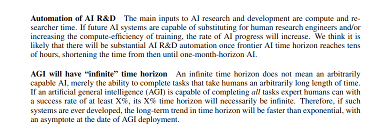
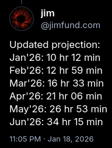

In Measuring AI Ability to Complete Long Software Tasks, METR outlined two reasons to expect the doubling time of model time-horizon to decrease. The first reason is that as time horizon extends, AI contributes increasingly to the creation of AI. The second is that time horizons tend to infinity as we approach AGI.
{kind=link}

Let's project time horizon taking these two things into account. We will work from the assumption that model utility is scaling linearly in time horizon and will continue to do so. This is because task distribution in AI research skews long, and once the AI goes beyond the hump of long tasks utility will continue to scale at least linearly as AI becomes increasingly superhuman.
Important model paramaters are time-horizon, the productivity contribution of AI, and doubling-time. I'll lay out Jimfund's values for these as of the beginning of May and we'll project from there.
Time-horizon is 26 hours and 53 minutes as that is the expected value based on my Jan 18 projection (the METR graph itself has become unreliable because METR’s task set has been saturated).
{kind=link}

The productivity contribution of AI in terms of uplift was ~20% with Claude Opus 4.6 at the beginning of February, 2026. Its time horizon was roughly 13 hours according to my projections, and was measured at 12 hours by METR. I’ll use the 13 hours figure. Working on our assumption that uplift scales linearly in time-horizon... time horizon in beginning May is 26 hr 53 min which is 107% bigger than 13 hours. So we increase uplift of 20% by 107% which gives us an uplift as of beginning May of 41.4%.
According to the toy model laid out in Anthropic’s Scaling Policy v3.1, in which AI progress is the sum of 3x compute and 3x algorithmic progress, 41.4% uplift would result in a 20.7% overall speedup in the rate of AI progress. You can explore the relationship between uplift and the rate of AI progress in the widget at the end of this post.
For many years from GPT-2 onward doubling time was observed as being roughly seven months. But the pace has increased, especially since we began scaling test-time compute. Therefore, the baseline doubling-time in today’s era is perhaps 4 months, with some stepwise downward pressure from scaling up models in 2026 as next-gen hardware comes online, and some contribution from the fact that we are already somewhat along our way in the journey to AGI (recall that time horizons tend to infinity as we approach that point). So, doubling-time today is not 4 months, but perhaps lies somewhere between 3.5 and 3 months, before taking into account the effect of AI contribution to the development of AI. Let’s call this figure 3.25 months. Taking into account AI contribution: 3.25 months reduced by 20.7% is 2.69 months.
To project AI time horizons we need to take into account this effect moving forward. We don’t just take 2.69 months as a constant; doubling time will decrease with each new SOTA model released, and even between model releases to a lesser extent as harnesses improve and the skill of human operators increases. So, we can model this effect in a stepwise fashion, with model release cadence currently once a month, and shifting to a new regime at time horizon 100h of bi-weekly releases, then a new regime of daily releases past 500h, and a new regime of continuous release past 1000 hours. I won't worry too much about the exact numbers here because they don't affect the projection much at all.
Further, we must model the decrease in doubling difficulty which results from the time horizons tending to infinity as we approach AGI. I would say that difficulty is currently at 0.9 and will be 0.5 at 500h and 0.1 at 3000 hours and 0.01 at 10,000 hours and is 0 by definition by like 100,000 hours because human task lengths are constrained by human lifespans which are too small to allow tasks much longer than that and once AI has a 50% task length as the longest human tasks…, well time horizon goes infinite because AI can complete all tasks humans can complete with 50% success, and that would be entailed by 100,000 hr length.
I think task utility is pretty concentrated at the length of a quarter of a year. Projects are measured in quarters and so on. And that’s 3 months or 12 weeks or 40 working hours * 12 = 480 hours. So at ~500 hours you’ve kind of exhausted most of the range of human taskcompletion ability, but not quite totally perhaps. At 2000 hours, or a full year, you’ve done 75% at least, and at 10,000 hours, or five full years, you’re at the length of the most difficult cognitive tasks individual humans do, so difficulty is probably pretty close to zero (although I should flesh out the nature of the relationship between the % of human cognitive taskcompletion ability saturated and doubling difficulty. OK, so that gives us 27 hours = 95% difficulty, 500 hours = 40% difficulty, 2000 hours = 5% difficulty, and 10,000 hours = maybe 0.1% difficulty.
We will model this as something continuous although maybe it should be backward acting stepwise or something.But we will model it as something continuous. So:
As of beginning May,
Time horizon = 26 hours 53 mins
Doubling time = 2.69 months
Uplift = 41.4.%
Assumptions:
Utility is linear in time horizon
OK, let’s write a prompt to get AI to do the projection according to these parameters
You are to a projection of AI model time horizon (TH). Assume that TH at beginning May is 26 hours and 53 minutes. Assume it is doubling at a rate of 2.69 months at beginning May. Use the toy model from Anthropic’s Responsible Scaling Policy v3.1 to model the relationship between algorithmic progress and overall AI progress. Assume that the rate of algorithmic progress scales linearly in time horizon, but only after a model of that time horizon has been released; therefore model this effect in a stepwise fashion, with model release cadence currently once a month, and shifting to a new regime at time horizon 100h of bi-weekly releases, then a new regime of daily releases past 500h, and a new regime of continuous release past 1000 hours. Additionally, doubling difficuly decreases in time horizon because it tends to infinity as we approach time horizons of 100,000. Implement this effect continuously rather than stepwise. Fit the difficulty curve such that time horizon 27 hours = 95% difficulty, 500 hours = 40% difficulty, 2000 hours = 5% difficulty, and 10,000 hours = maybe 0.1% difficulty.
OK, I’m running this through Codex now.
| Month | Date | TH | Released TH | Difficulty | Doubling Period | Release Regime |
|---|---|---|---|---|---|---|
| May 2026 | 2026-05-01 00:00 | 26h 53m | 26h 53m | 0.951226 | 81.875d | monthly |
| Jun 2026 | 2026-06-01 00:53 | 35h 22m | 35h 09m | 0.876604 | 65.398d | monthly |
| Jul 2026 | 2026-07-01 00:34 | 2.1 days | 2.1 days | 0.793606 | 48.204d | monthly |
| Aug 2026 | 2026-08-01 00:15 | 3.3 days | 3.3 days | 0.687542 | 30.114d | monthly |
| Sep 2026 | 2026-09-01 00:15 | 8.6 days | 6.0 days | 0.519975 | 14.084d | biweekly |
| Sep 2026 final | 2026-09-15 06:02 | 11.44 years | 11.36 years | inf | inf | continuous |
Hmm, I want to display this for readers of a blog post I'm writing. I'm
thinking maybe we could do a chart where it has date along the bottom and the
user can move his mouse accross the chart and the corrosponding date and time
horizon will be shown and also he could have the option to tweak the
parameters